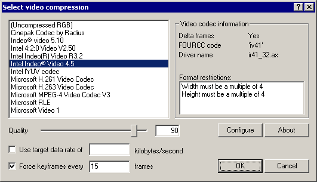

On a crash...
Dialogs: Video filters
Video frame rate control
Video color depth
Video range
Video compression
Audio filters
Audio interleaving
Audio compression
Audio conversion
Audio volume
Capture settings
Capture preferences
Capture volume meter
Preferences
|  VirtualDub can use video codecs installed in Windows to compress video. | Note | Video codecs are external drivers created by third parties and are not part of VirtualDub. VirtualDub does not install codecs by itself and does not provide any video compression technology of its own. | - Selecting a video codec
- Currently installed video codecs are listed in the top left pane; select a codec to use or choose "uncompressed RGB" to disable video compression. Once a codec is selected, diagnostic information appears on the right side. Every codec has a unique fourcc, or four character code, associated with it.
| Note | Not all codecs are usable -- sometimes programs install versions of a codec designed only to decompress video, not to compress it. Also, sometimes the codecs are keyed to a particular program due to licensing concerns, and thus won't work in VirtualDub. | | Note | For performance reasons, many codecs split the video frame into equal-size tiles and thus require the frame width and height to be specific multiples of the tile size. Requiring the width to be a multiple of four pixels is very common. VirtualDub attempts to detect such limitations and displays any such information in the right pane. In some rare cases with broken codecs this check fails, and the result may be a "bad format" error when you attempt to begin compression. | - Configuring the codec
- Some codecs accept quality, data rate, and key frame interval parameters. The higher the quality, generally the slower the codec runs and the larger the output, but the better the video looks after compression. By setting a data rate, you request that the codec attempt to produce output at a fixed size-per-time ratio, set in kilobytes/second. And by setting a key frame interval, you are enforcing that seek points are placed at regular intervals in the video in order to reduce wait time when seeking. Nearly all codecs support additional parameters, which can be set by pressing the Configure button. The dialog that appears is codec-specific; please consult the documentation for each codec for further details.
| Note | Codecs are designed for a particular range of frame sizes and compression ratios and perform inefficiently outside that range. In particular, for most codecs, setting Quality to 100 is likely to produce ridiculous file sizes and may not even produce perfect-looking video. Small file size and perfect-quality video are mutually exclusive. If you need perfect quality and are willing to put up with large file sizes, lossless codecs exist that are created specifically for this purpose. | | Note | If the codec allows you to enter a key frame interval but you don't enter one, you may get a video with a single key frame at the beginning. This means that every time you seek backwards in the video the player will have to decompress the entire video from the start up to that point, which is a tad slow. Key frames generally have lower compression ratios, so the interval determines a tradeoff between seek latency and compression efficacy. | | Note | Data rates specified here only pertain to video. Make sure to allow for audio and for file structure overhead. | | Note | Many modern codecs do adaptive key frame placement and more complex data rate regulation, and place all their settings in their configuration dialog. Although the data rate entry in VirtualDub's configuration dialog is specified in units of kilobytes per second, or 1024 bytes/sec, codec dialogs generally use kilobits per second (Kbits/sec), or 1000 bits/sec (125 bytes/sec). | |